You can select objects in the 3D and drawing worlds by using a mouse and other tools.
Contents Hide
Left mouse button (LMB) will directly select an object based on the context of a scene.
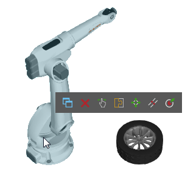
Press and hold CTRL to add/remove an object from the current selection.
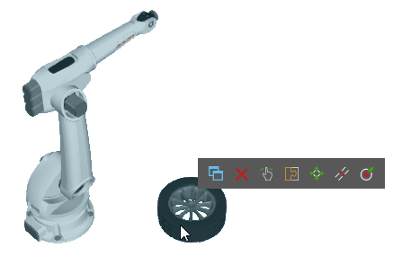
Most tabs on the Ribbon show the Manipulation group, which has a set of Select commands for drawing selection areas with the left mouse button (LMB) and indirectly selecting objects.
In Layout view, you can select components.
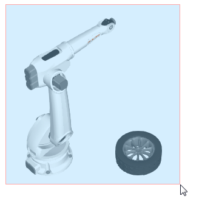
In Robot view, you can select robot positions. You may also use the Jog command to directly select a robot controller.
In Modeling view, you can select features of a component.
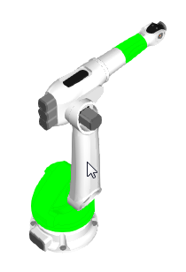
Tip: You can double-click a feature to select its node.
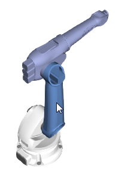
In Drawing view, you can select layout items, for example dimensions, annotations, drawings and drawing templates.
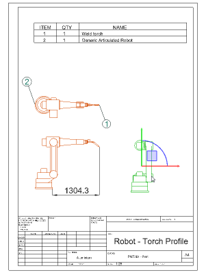
Panels can be used to select objects based on the context of a scene.
In Layout view, you can use the Cell Graph panel to select components.
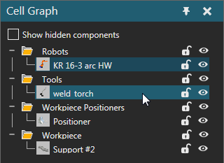
In Robot view, you can use the Jog command and panel to select a robot and its data.
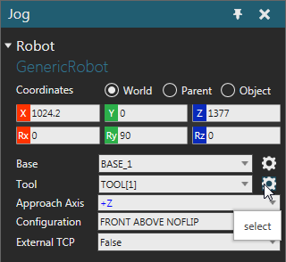
You may also use the Program Editor panel to select statements in a robot program.
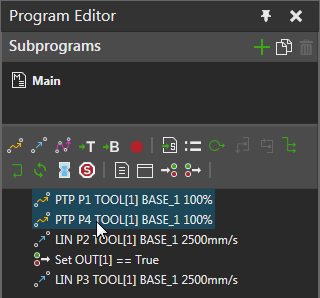
In Modeling view, you can use the Component Graph panel to select the nodes, properties, behaviors and features of a component.
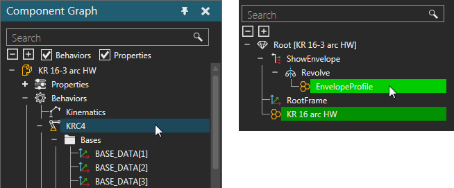
In Drawing view, if you are using a drawing template, you can use the template's parts list/bill of materials to select drawings and line sets representing components.
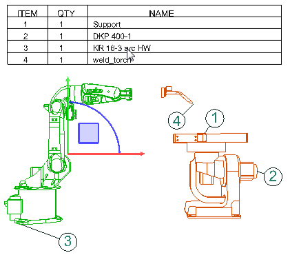